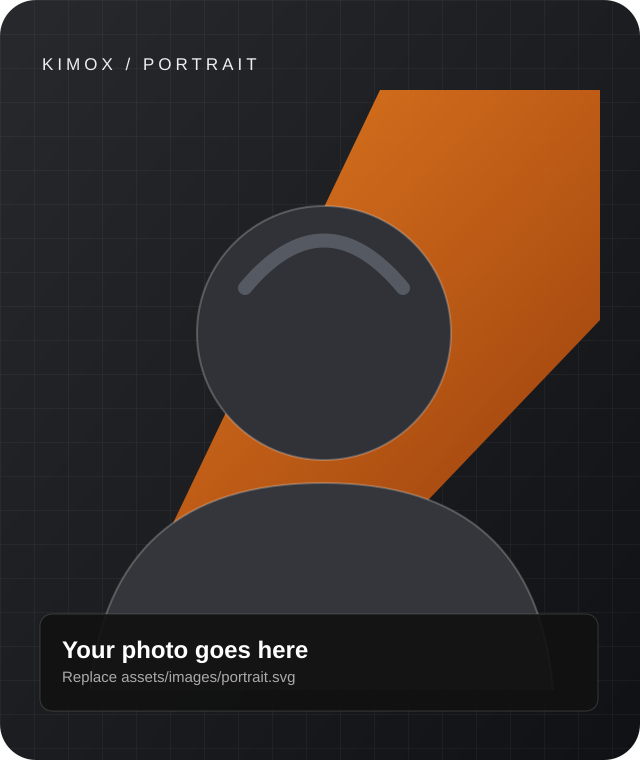

Web & software
Websites, web applications and basic software solutions.
Edrine Kimuli / Software Engineerer / Full-Stack Web Developer
Exploring the intersection of software development, intelligent systems, and creative technology — one meaningful solution at a time.

Curiosity is the starting point.
Practical engineering is the goal.
I'm Edrine Kimuli, professionally known as KIMOX — a Software Engineering student at Kabale University.
I enjoy developing practical digital solutions, learning how systems work, and turning problems into opportunities to build. My interests span full-stack applications, data and machine learning, database systems, and emerging technologies.
I'm currently in Year III, building a practical foundation through coursework, personal projects, and technical experience.
A growing toolkit shaped by learning, experimentation, and practical development. Listing a technology does not imply expert-level mastery.
Five explorations of real-world problems, from learning systems to agricultural information and service management.
Software Engineering · Year III
Academic work spanning software engineering and DevOps, machine learning, computer graphics, database programming, and simulation and modelling.
Intern Trainee
Practical exposure to software installation, web design and hosting, networking, troubleshooting, graphics, and project development.
Practical areas where I can discuss small projects, collaborate and continue growing.
Websites, web applications and basic software solutions.
Database design, data analysis and exploratory predictive models.
Software setup, basic networking and computer troubleshooting.
UI/UX exploration, WordPress and visual design.
Topics of ongoing interest and development—not claims of completed expertise.
Follow my development journey and explore public work on GitHub. Live statistics are deliberately omitted unless verified.
Visit @KIMULI8595A downloadable CV will become available when the real PDF is added to the project.
Download CVHave an idea, a project, or a technical challenge? I'd be glad to explore how technology can help bring it to life.
FIND ME ONLINEUganda